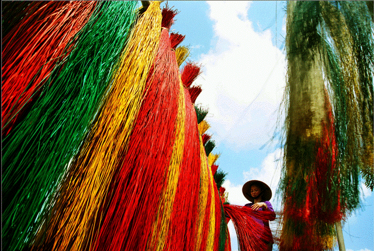

Làng chiếu Cẩm Nê thuộc xã Hòa Tiến, huyện Hòa Vang cách trung tâm thành phố Đà Nẵng 14km về phía Tây-Nam, nằm giữa một vùng đồng bằng do phù sa sông Cẩm Lệ bồi tạo nên. Chẳng những người quanh vùng mà cả người ở xa tận Huế, Đông Hà ngoài Quảng Trị cũng biết cái tên của làng quê nhỏ bé này : Làng Cẩm Nê. Bởi làng có nghề dệt chiếu truyền thống và nổi tiếng từ nhiều đời nay